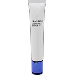
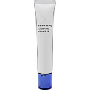

トランシーノブランドの美白＊1［メラニンと角質層に充実のアプローチ］
・美白有効成分『トラネキサム酸』配合
美白有効成分「トラネキサム酸」により、メラニンをつくらせる「しみ情報」をブロック。しみ＊2の根源にアプローチし、メラニンの生成連鎖を抑止します。
・角質層リファイン成分＊3配合
角質層の水分が蒸発し、乾燥した肌は、光を乱反射して肌がくすんで見えてしまいます。
「角質層リファイン成分」はくすみが気になる肌へたっぷりのうるおいを与え、内側＊4から透明感あふれる肌を目指します。
＊1 メラニンの生成を抑え、しみ・そばかすを防ぐ
＊2 日焼けによるしみ
＊3 うるおい成分（トレハロース硫酸Na、ポリメタクリロイルオキシエチルホスホリルコリン液）
＊4 角質層
［整肌・保湿成分］
透明感サポート成分EX＊5配合
＊5 うるおい成分（クワエキス、パンテテインスルホン酸Ca、セイヨウノコギリソウエキス）
低刺激性
無香料
無着色
アレルギーテスト済み＊
＊すべての方にアレルギーが起こらないというわけではありません。